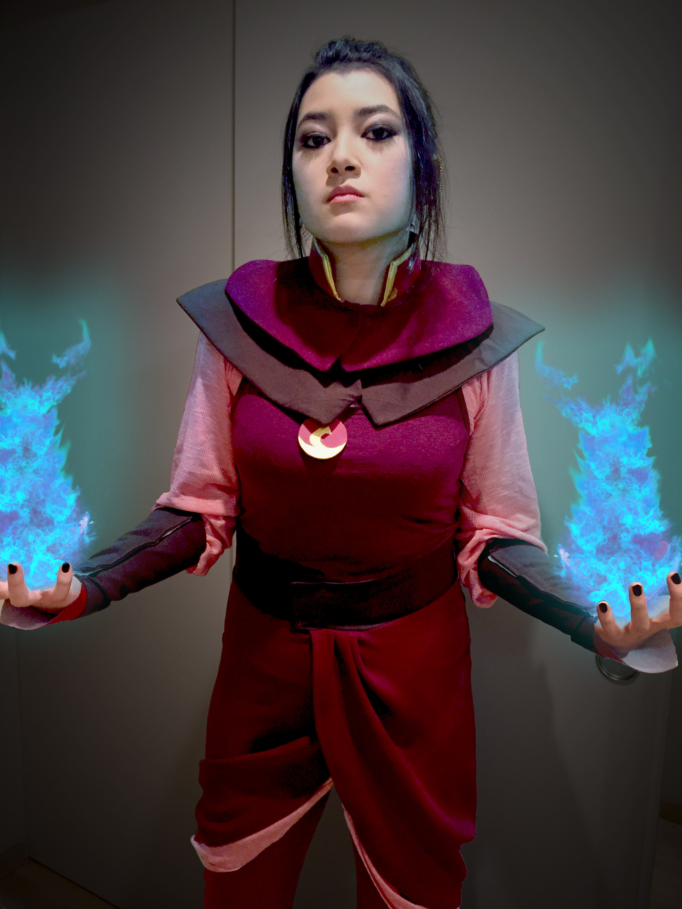
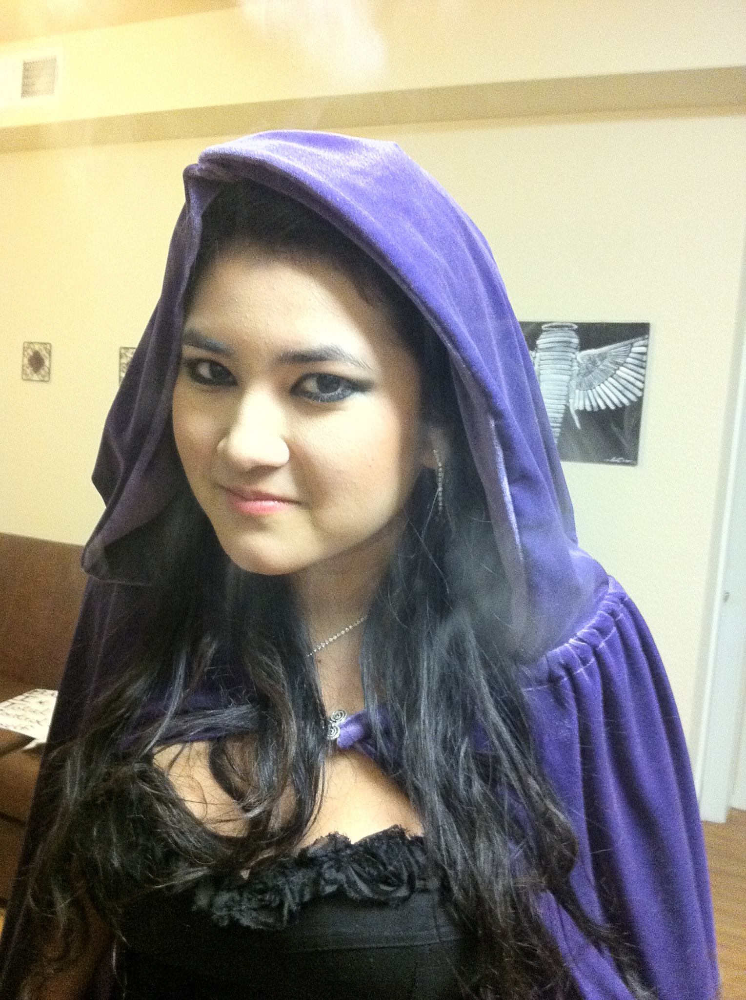

Azula

I worked on this Azula costume for Halloween of 2015. It was by far the most involved and most authentic costume I've made. I spent about a week working on it several hours each day. I am so happy with how it turned out and it is the costume that has inspired me to get involved with cosplay. Although there are a good amount of Firelord Azula cosplay tutorials available online, there were not many tutorials for this version of Azula -- before she becomes firelord. This meant that I had to do a lot of exploring and trial and error to make some of the pieces.
The most difficult part was the skirt because it is gathered in a certain way that was hard to get right. I also decided to make everything very modular so almost everything is a separate piece rather than one single dress. This made getting things on and off pretty simple, I could just take off the belt and skirt and I was left in a pants and shirt. The costume was also very warm which made walking around in October easy and comfortable. I am probably most proud of the detail work with vinyl that went into the collar, headpiece, sleeves, and neckpiece. This was my favorite Halloween costume.
Princess Jasmine

This was a Halloween costume I made for my sister a few years ago. I made it in one evening and had to get pretty crafty with it. The top is formed on a strapless bra. I overlayed the blue material and gathered it in the front to get a pleasing look. and attached the sleeved to the sides.
This was the first pair of pants I had ever made and they came out pretty well, ezpecially since the material I was working with wasn't very forgiving and had no elasticity to it. I knew I wanted the bottom of the panted to poof out a bit so I left them wide but sewed an elastic band at the bottom that brought them in at the ankles. Instead of using a zipper, elastic band, or buttons for the waist I simply left the sides of the pants open a few inches down on each side then left ribbons to tie them. My sister wore shorts under and it was much simpler and fast than doing it any of the other ways.
Grumpy Cat
This was a mini costume I made for Halloween a few years ago. I saw a tutorial on youtube for the hood/glove combo and thought it was adorable. I made it the evening before halloween and I love how it turned out. I found some fur-like clothe and felt and mostly followed the tutorial. You can't see in the picture but the sides go down to form mittins that have little cat paws on them -- they're awesome.
The shirt was just an off white long-sleeve shirt I found at a thrift store. I made a stencil that said NO. out of poster border then used spray paint to stencil the message on the shirt. This costume was also super comfy, easy, and warm.
Ancient Greek

This was a costume for my sister's final project during high school. She had to make a booth that featured a country of her group's choosing. They chose Greece and built a themed booth, brought in greek food, and provided visual aids to teach about the culture.
Her group decided to dress in more traditional ancient greek clothing so we went with a toga-inspired dress. I made two of them -- one for her and her partner -- in an evening or two.
Morgana

This costume was for Halloween a few years ago. I decided to dress up as the Lady Morgana from Arthurian legend because she is my favorite character from the stories -- specifically the Morgana character from the BBC show "Merlin". Overall I worked for about a week on the costume mainly in the evenings and it turned out to be pretty extravegant. Not pictured is the full outfit which had a purple velvet skirt with a satin/rose lace front.
My favorite part of this costume is the long purple cloak. It has a small detail in the front and it turned out very professional looking. Not to mention it's a freakin' cloak! So cool!